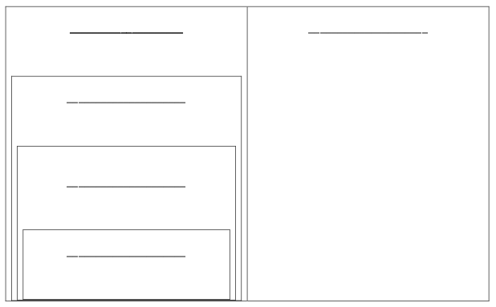

Identify the subgroup of Real numbers a number belongs to.
Link to section in online textbook
First, watch this video to review the different sets of Real numbers.
After watching the video, write down definitions for the following subgroups of the
Real numbers. You should include examples for each (you may even want
to take a sneak peak at the problems and use some of these as examples!)
and descriptions of how to tell what the smallest set the number belongs
to.
- Natural:
- Whole:
- Integers:
- Rational:
- Irrational:
It also helps to visualize the groups in a chart. An empty chart is provided below. Fill
in the subgroups and try to classify the following numbers:

Smallest subgroup the number belongs to:
Natural: ,
Whole:
Integer:
Rational:
Irrational: , ,
Not a Real Number: , ,
Remember to reduce first, then decide the smallest subgroup the number
belongs to!
Note: This part of the homework will change each time you click
“Another”. You can keep clicking “Another” to practice seeing these more
difficult numbers to classify.
Which of the following is the
smallest set of Real numbers that belongs
to?
To work around current Xronos issues, input the corresponding number for the correct
set.
Natural - 0
Whole - 1
Integer - 2
Rational - 3
Irrational - 4
Not a Real Number - 5
Which of the following is the
smallest set of Real numbers that belongs
to?
To work around current Xronos issues, input the corresponding number for the correct
set.
Natural - 0
Whole - 1
Integer - 2
Rational - 3
Irrational - 4
Not a Real Number - 5
Which of the following is the
smallest set of Real numbers that belongs
to?
To work around current Xronos issues, input the corresponding number for the correct
set.
Natural - 0
Whole - 1
Integer - 2
Rational - 3
Irrational - 4
Not a Real Number - 5